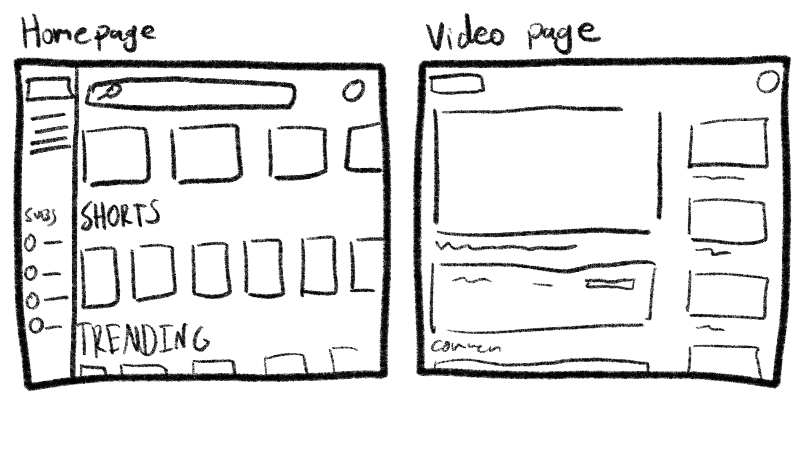
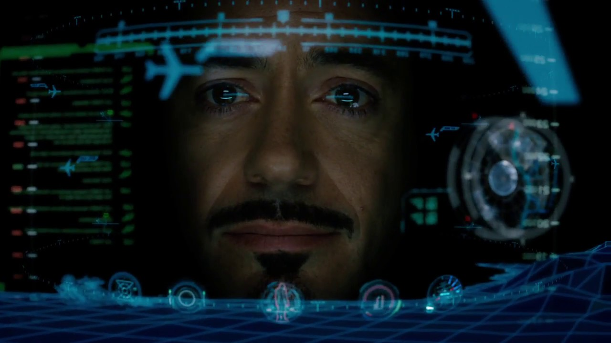

💾【 ＷＯＲＬＤ • ＷＩＤＥ • ＷＥＢ 】📡
For the first week, we began with learning about Human Computer Interaction (HCI), which is the ways in how us humans interact with technology. We want to think of how common gestures are used and their perceived action tied to the gesture. For that, our first activity is to create our own gestures.
Approval
The first gesture is a simple one, it symbolises a heart without using two hands by making use of the index and the thumb. This can be used as a way to provide affirmation similarly to how you can react to instagram messages with a heart and then immediately end a conversation without making it awkward./p>
Make The Connection
The second gesture uses both hands and shows the act of “piecing the puzzles together”. It can be used in conversations to easily say the phrase “get the hint” or “make the connection”, which is great for more secretive situations
Meme Identifier Capcha
Straying a bit away from conventional gestures, we were also told to think of how we interact with media or technology. So we thought of a new form of captcha to determine if you are human or not. This uses obscure internet memes, and the person being tested needs to identify the meme.
HTML Tags activity
We had another group activity to begin our creative coding journey. We were tasked to quickly sketch a website we are familiar with from our memories. Our group decided to go with Youtube and we were able to sketch out the homepage and the video page to the best of our capabilities. We were then tasked to recreate the base html tags skeleton of the homepage that we sketched out.

Movie HUD Inspiration
As a pre-week 1 activity, we were also tasked to watch movies to check out interactive HUDs used and how it is portrayed. I had the Iron Man movie to watch, and the aesthetic of it takes a much more futuristic approach, making use of holographic blues, reds and green overlays that are often semi-transparent, primarily with the Iron Man suit itself. The elements of the HUD also often move around, fading in and out, spinning and more, making it more dynamic and giving the sense that Tony is controlling his tech.
